Студент: ТУЙИШИМЕ Тьерри
Группа: НКАбд-05-25
1 Цель работы [2](#цель-работы)
3 Выполнение лабораторной работы [2](#выполнение-лабораторной-работы)
4 Задание по mc [2](#задание-по-mc)
5 Задание по встроенному редактору mc [9](#задание-по-встроенному-редактору-mc)
7 Ответы на контрольные вопросы [12](#ответы-на-контрольные-вопросы)
Освоение основных возможностей командной оболочки Midnight Commander. Приобретение навыков практической работы по просмотру каталогов и файлов; манипуляций с ними.
Вызвав в коммандной строке man mc, я прочитала информацию о mc:
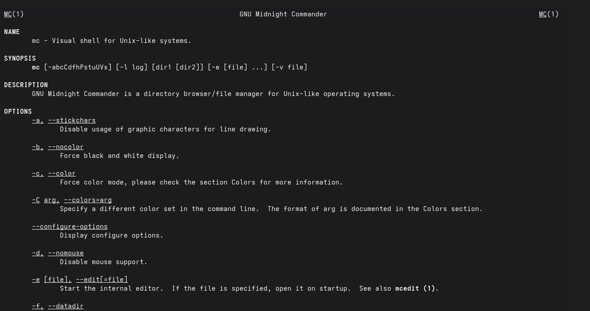
Рис. 1: Информация о mc
Я запускала mc, изучала его структуру и меню:
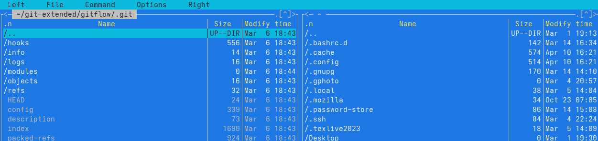
Рис. 2: Командная оболочка mc
Используя управляющие клавиши я; скопировала файл README.md в домашний каталог:
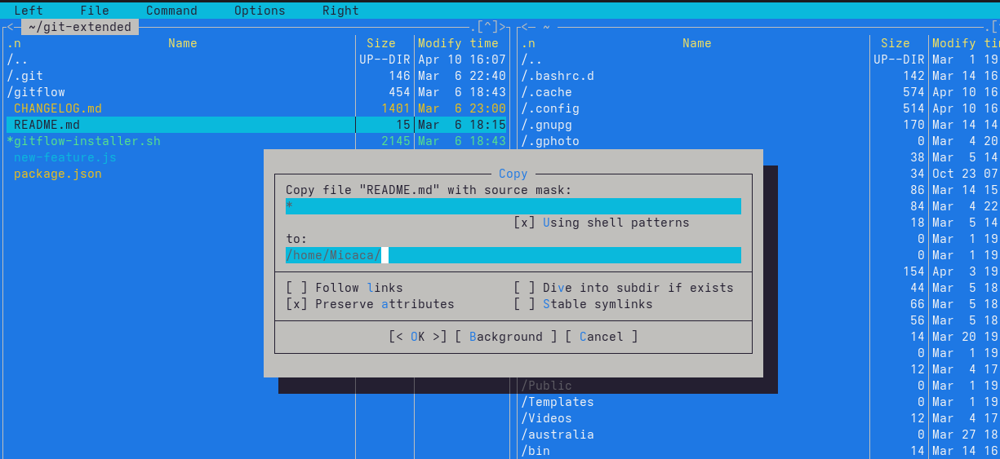
Рис. 3: Копирование файла
Создала файл new в ~/work/blog и удалила его:
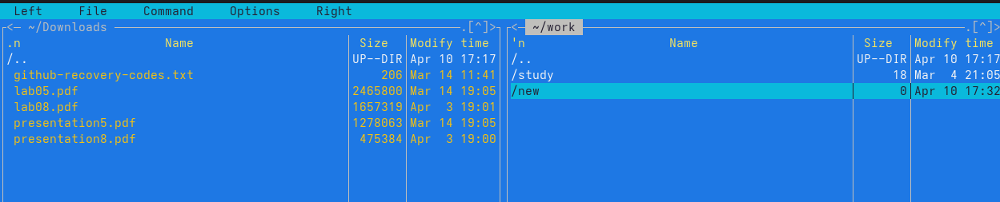
Рис. 4: Созданный файл
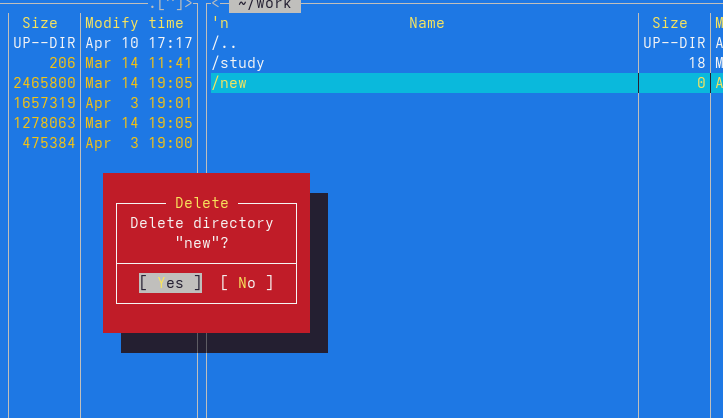
Рис. 5: Удаление файла
Получила информацию о размере и правах доступа на файл README.md:
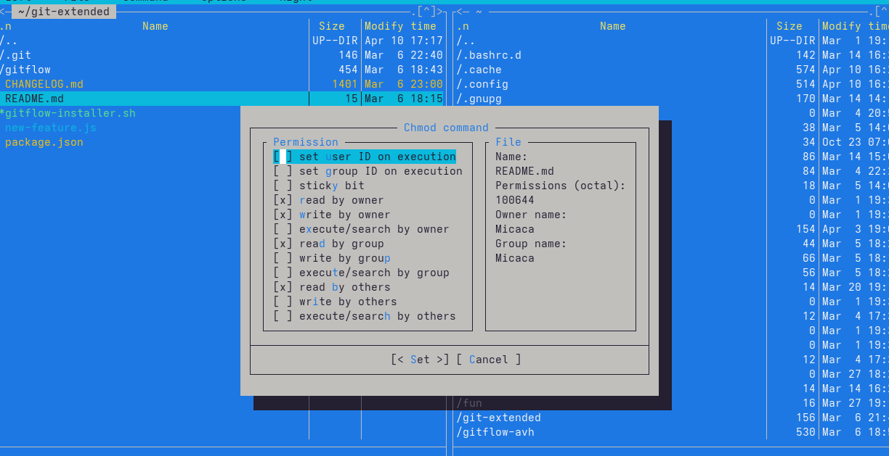
Рис. 6: Информация о README.md
В правой панели вывела информацию о файле. При этом я получаю больше информации чем в выводе ls:
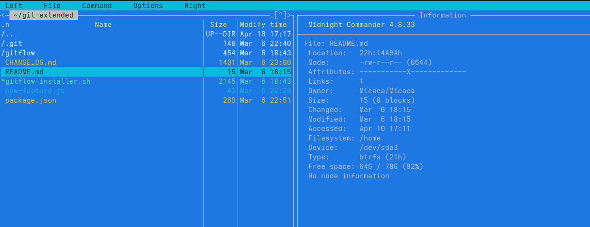
Рис. 7: Информфцию о файле
Используя возможности подменю Файл; я посмотрела содержаемые текстового файла:
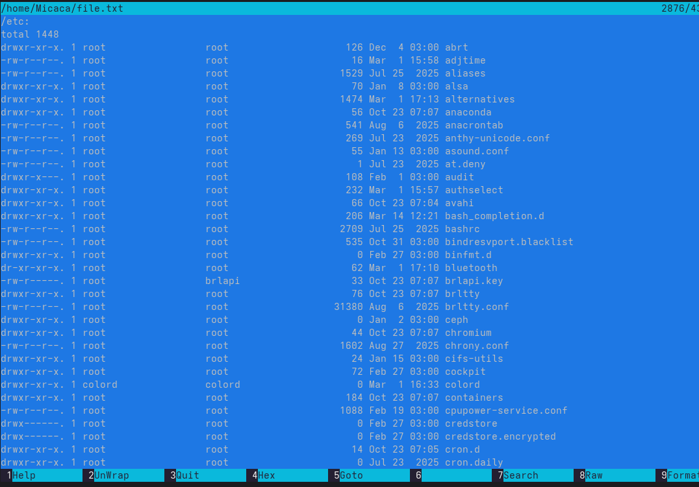
Рис. 8: Содержаемые файла
редактировала содержаемые текстового файла (abrt на mi):
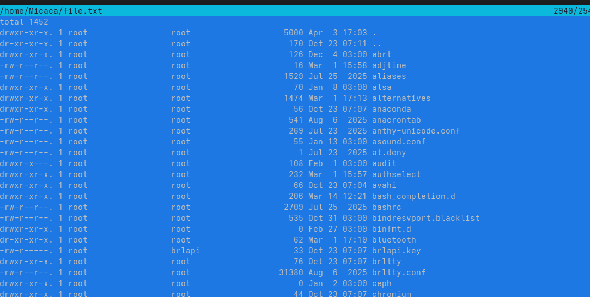
Рис. 9: Редактирование файла
Создала новый каталог:
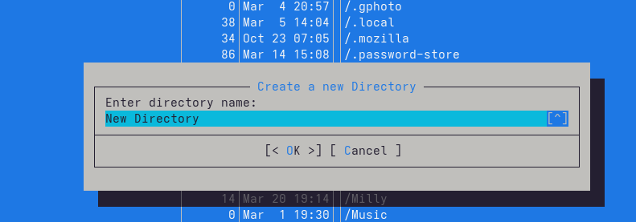
Рис. 10: создание каталога
и скопировала файл в ,только что созданный каталог:
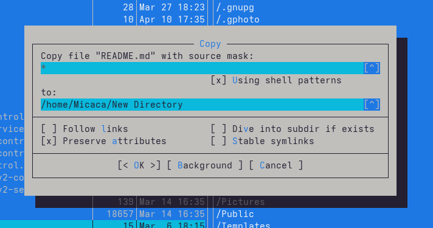
Рис. 11: копирование файла
С помощью подменю команда можно найти в файловой системе файл с заданными условиями:
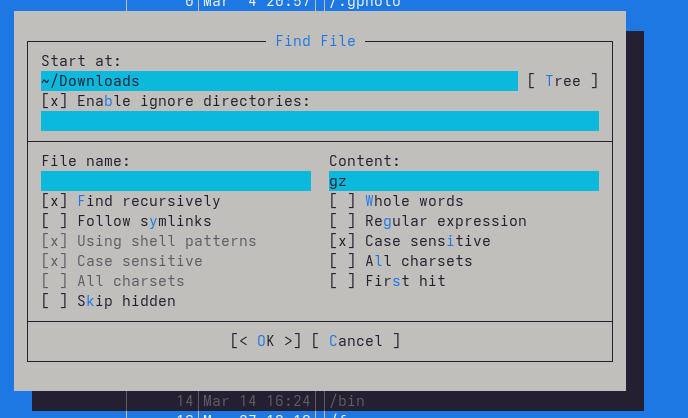
Рис. 12: файлы которые содержат gz
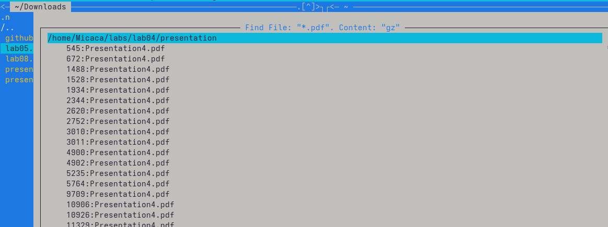
Рис. 13: результаты поиска
Исользуя подменю команда я повторила одну из предыдущих команд:
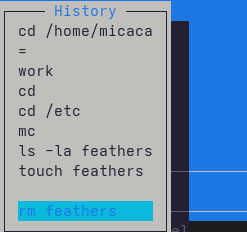
Рис. 14: повторение команды
Также перешла в домашний каталог и анализировала файл меню и файл расширения:
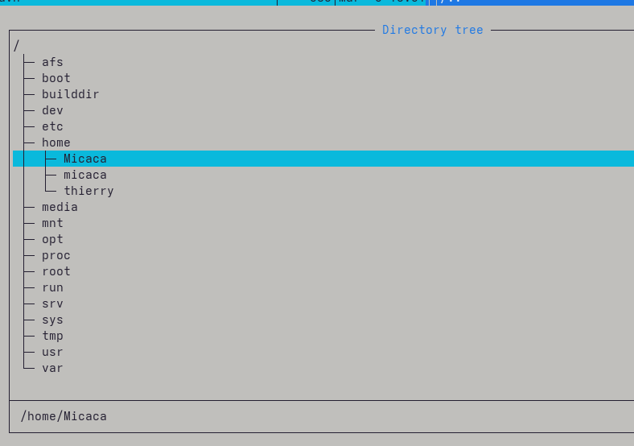
Рис. 15: Переход в домашний каталог
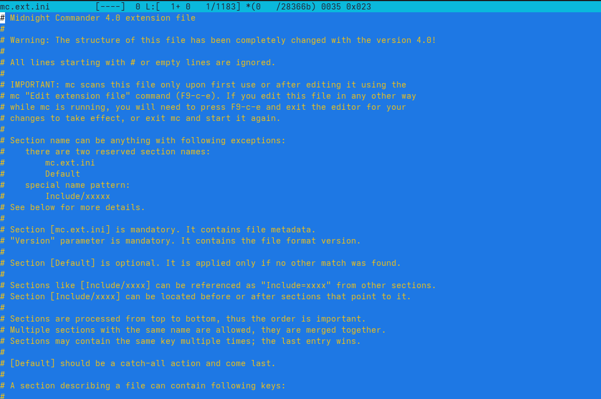
Рис. 16: файл расширения
Из подменю настройка вызвала окна настройки панели:
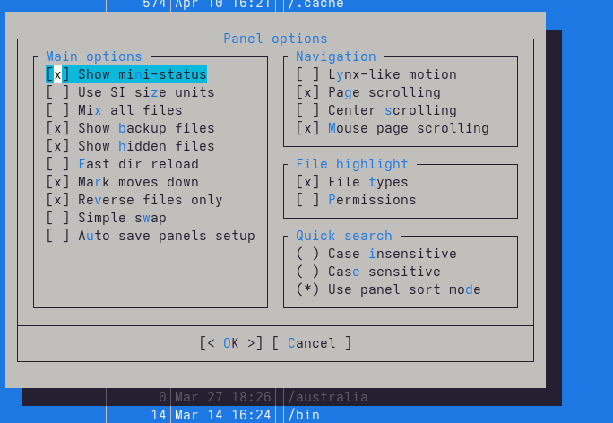
Рис. 17: Настройка панели
Настройки внешнего вида:
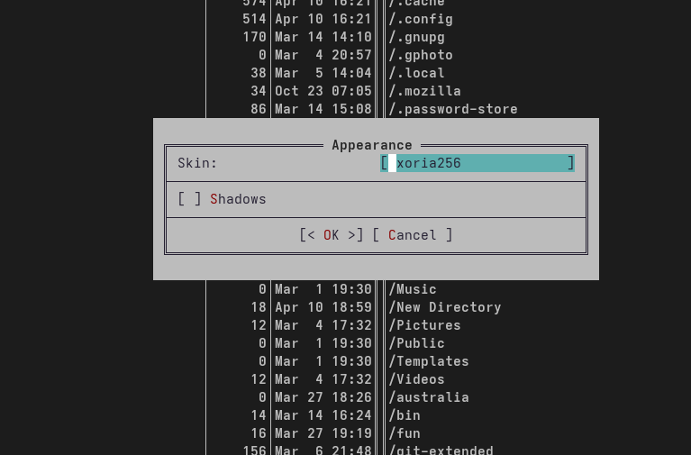
Рис. 18: Настройки внешнего вида
С помощью команды touch создала text.txt:
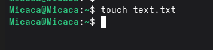
Рис. 19: Создание text.txt
Далее открыла его для редактирования с помощью f4 и с shift ctrl ins вставила текст:
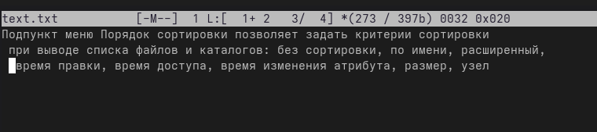
Рис. 20: Редактирование text.txt
С помощью f3 выделила текст и удалила выделеные слова f8:
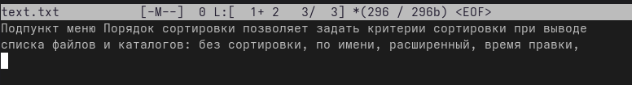
Рис. 21: Удаление текста
Перемещала выделенный текст с помощью f6:
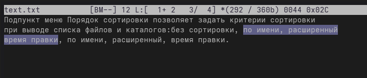
Рис. 22: Перемещение текста
Сохранила изменении с помощью f2:
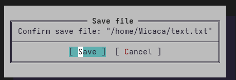
Рис. 23: Сохранение изменений в файле
С помощью ctrl-u отменила последнее действие:
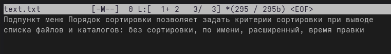
Рис. 24: Отменение последнего действия
Используя pg up и pg dn перешла в начало и конец файла и написала некоторый текст. Затем сохранила и закрыла файл:
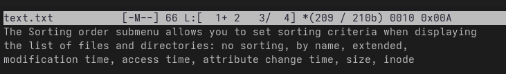
Рис. 25: Добавление текста
Открыла файл с исходным текстом на cpp:
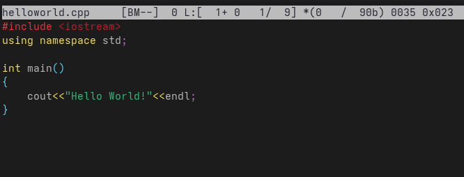
Рис. 26: файл cpp
Используя подменю команда я выключила подсветку синтаксиса:
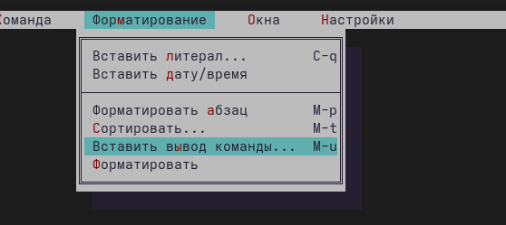
Рис. 27: Подменю команда
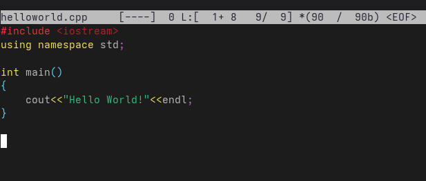
Рис. 28: подсветка синтаксиса
При выполнении данной работы я освоила основные возможности командной оболочки Midnight Commander, приобретела навыки практической работы по просмотру каталогов и файлов; манипуляций с ними.
Панели могут дополнительно быть переведены в один из двух режимов: Информация или Дерево. В режиме Информация на панель выводятся сведения о файле и текущей файловой системе, расположенных на активной панели. В режиме Дерево на одной из панелей выводится структура дерева каталогов.
В разделе Командная строка оболочки (Shell) перечисляются команды и комбинации клавиш, которые используются для ввода и редактирования команд в командной строке оболочки. Большая часть этих команд служит для переноса имен файлов и/или имен каталогов в командную строку (чтобы уменьшить трудоемкость ввода) или для доступа к истории команд. Клавиши редактирования строк ввода используются как при редактировании командной строки, так и других строк ввода, появляющихся в различных запросах программы. Как с помощью меню так и с помощью команд shell можно переносить, копировать и получать информацию о файоах и каталогах.
В меню каждой (левой или правой) панели можно выбрать Формат списка:
стандартный — выводит список файлов и каталогов с указанием размера и времени правки; ускоренный — позволяет задать число столбцов, на которые разбивается панель при выводе списка имён файлов или каталогов без дополнительной информации; расширенный — помимо названия файла или каталога выводит сведения о правах доступа, владельце, группе, размере, времени правки; определённый пользователем — позволяет вывести те сведения о файле или каталоге, которые задаст сам пользователь.
Просмотр ( F3 ) — позволяет посмотреть содержимое текущего (или выделенного) файла без возможности редактирования. Просмотр вывода команды ( М + ! ) — функция запроса команды с параметрами (аргумент к текущему выбранному файлу). Правка ( F4 ) — открывает текущий (или выделенный) файл для его редактирования. Копирование ( F5 ) — осуществляет копирование одного или нескольких файлов или каталогов в указанное пользователем во всплывающем окне место. Права доступа ( Ctrl-x c ) — позволяет указать (изменить) права доступа к одному или нескольким файлам или каталогам . Жёсткая ссылка ( Ctrl-x l ) — позволяет создать жёсткую ссылку к текущему (или выделенному) файлу. Символическая ссылка ( Ctrl-x s ) — позволяет создать символическую ссылку к текущему (или выделенному) файлу. Владелец/группа ( Ctrl-x o ) — позволяет задать (изменить) владельца и имя группы для одного или нескольких файлов или каталогов. Права (расширенные) — позволяет изменить права доступа и владения для одного или нескольких файлов или каталогов. Переименование ( F6 ) — позволяет переименовать (или переместить) один или несколько файлов или каталогов. Создание каталога ( F7 ) — позволяет создать каталог. Удалить ( F8 ) — позволяет удалить один или несколько файлов или каталогов. Выход ( F10 ) — завершает работу mc.
Дерево каталогов — отображает структуру каталогов системы. Поиск файла — выполняет поиск файлов по заданным параметрам. Переставить панели — меняет местами левую и правую панели. Сравнить каталоги ( Ctrl-x d ) — сравнивает содержимое двух каталогов. Размеры каталогов — отображает размер и время изменения каталога (по умолчанию в mc размер - каталога корректно не отображается). История командной строки — выводит на экран список ранее выполненных в оболочке команд. Каталоги быстрого доступа ( Ctrl- ) — пр вызове выполняется быстрая смена текущего каталога на один из заданного списка. Восстановление файлов — позволяет восстановить файлы на файловых системах ext2 и ext3. Редактировать файл расширений — позволяет задать с помощью определённого синтаксиса действия при запуске файлов с определённым расширением (например, какое программного обеспечение запускать для открытия или редактирования файлов с расширением doc или docx). Редактировать файл меню — позволяет отредактировать контекстное меню пользователя, вызываемое по клавише F2 . Редактировать файл расцветки имён — позволяет подобрать оптимальную для пользователя расцветку имён файлов в зависимости от их типа.
Конфигурация — позволяет скорректировать настройки работы с панелями. Внешний вид и Настройки панелей — определяет элементы (строка меню, командная строка, подсказки и прочее), отображаемые при вызове mc, а также геометрию расположения панелей и цветовыделение. Биты символов — задаёт формат обработки информации локальным терминалом. Подтверждение — позволяет установить или убрать вывод окна с запросом подтверждения действий при операциях удаления и перезаписи файлов, а также при выходе из программы. Распознание клавиш — диалоговое окно используется для тестирования функциональных клавиш, клавиш управления курсором и прочее. Виртуальные ФС —- настройки виртуальной файловой системы: тайм-аут, пароль и прочее.
F1 Вызов контекстно-зависимой подсказки; F2 Вызов пользовательского меню с возможностью создания и/или дополнения дополнительных функций; F3 Просмотр содержимого файла, на который указывает подсветка в активной панели (без возможности редактирования); F4 Вызов встроенного в mc редактора для изменения содержания файла, на который указывает подсветка в активной панели; F5 Копирование одного или нескольких файлов, отмеченных в первой (активной) панели, в каталог, отображаемый на второй панели; F6 Перенос одного или нескольких файлов, отмеченных в первой (активной) панели, в каталог, отображаемый на второй панели; F7 Создание подкаталога в каталоге, отображаемом в активной панели; F8 Удаление одного или нескольких файлов (каталогов), отмеченных в первой (активной) панели файлов; F9 Вызов меню mc; F10 Выход из mc;
Ctrl-y удалить строку; Ctrl-u отмена последней операции; Ins вставка/замена; F7 поиск (можно использовать регулярные выражения); (стрелочка вверх)-F7 повтор последней операции поиска; F4 замена; F3 первое нажатие — начало выделения, второе — окончание выделения; F5 копировать выделенный фрагмент; F6 переместить выделенный фрагмент; F8 удалить выделенный фрагмент; F2 записать изменения в файл; F10 выйти из редактора.
Можете сохранить часто используемые команды панелизации под отдельными информативными именами, чтобы иметь возможность их быстро вызвать по этим именам. Для этого нужно набрать команду в строке ввода (строка “Команда”) и нажать кнопку Добавить. После этого потребуется ввести имя, по которому мы будем вызывать команду. В следующий раз вам достаточно будет выбрать нужное имя из списка, а не вводить всю команду заново.
Панель в mc отображает список файлов текущего каталога. Абсолютный путь к этому каталогу отображается в заголовке панели. У активной панели заголовок и одна из её строк подсвечиваются. Управление панелями осуществляется с помощью определённых комбинаций клавиш или пунктов меню mc.